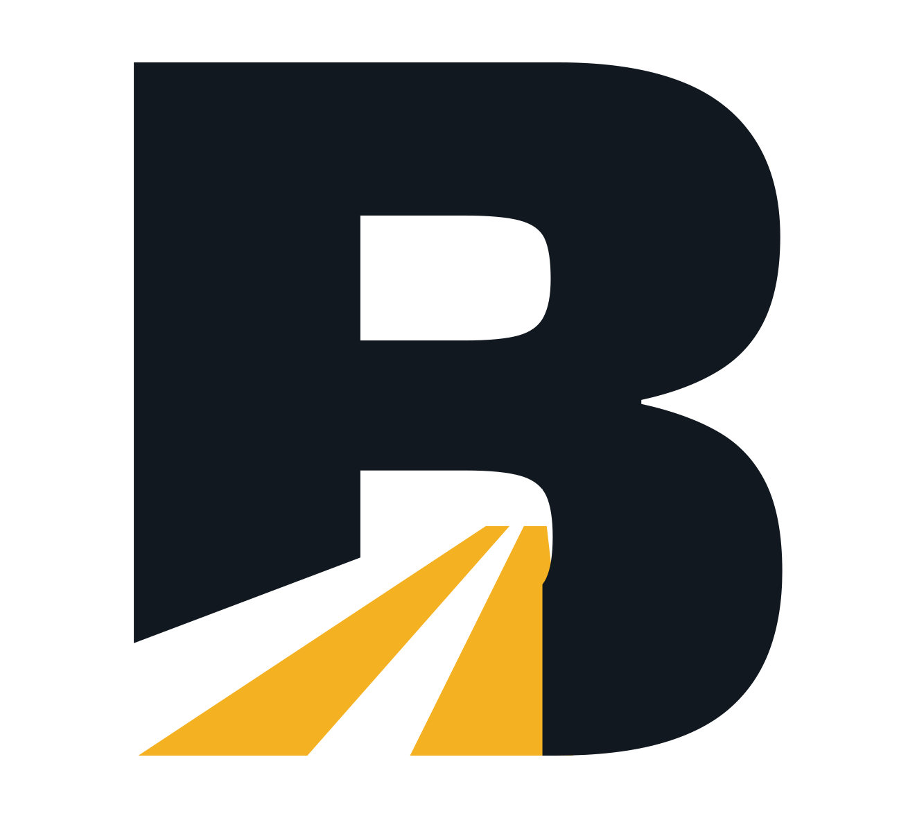
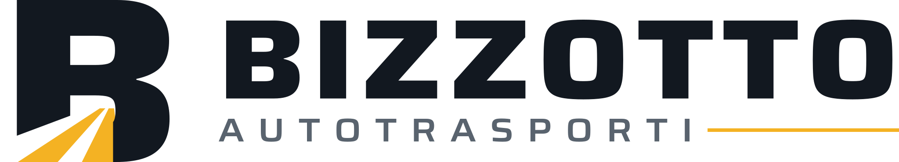
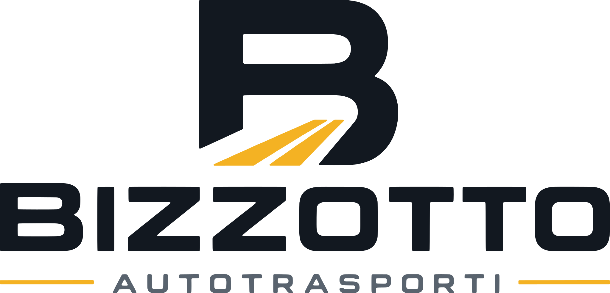
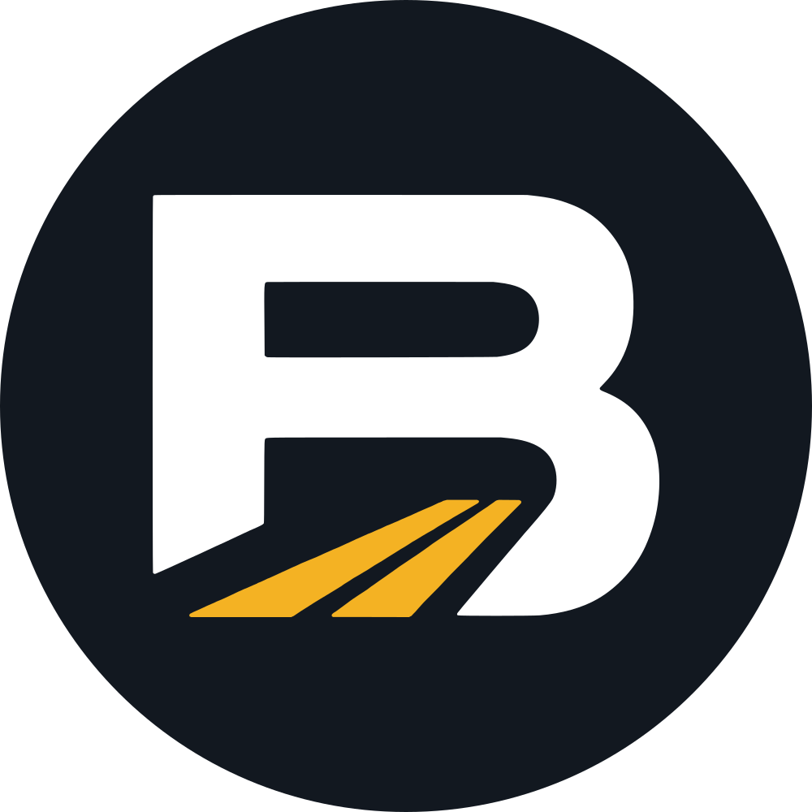
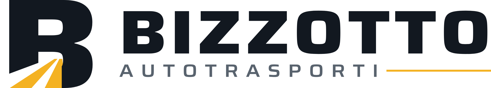
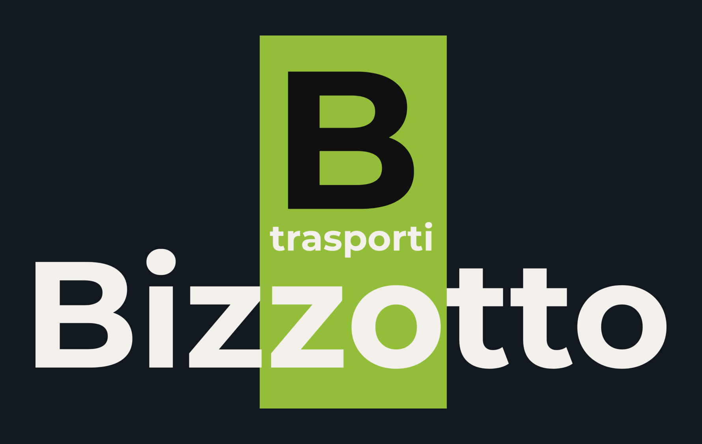
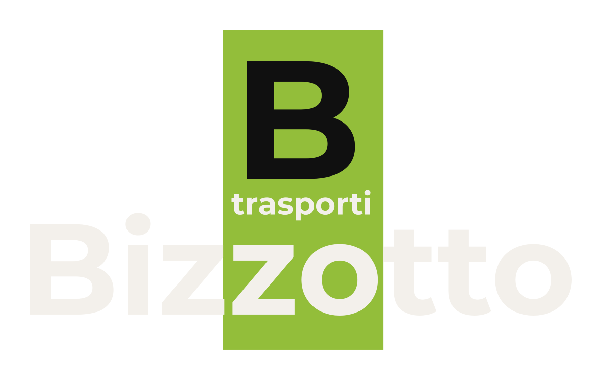
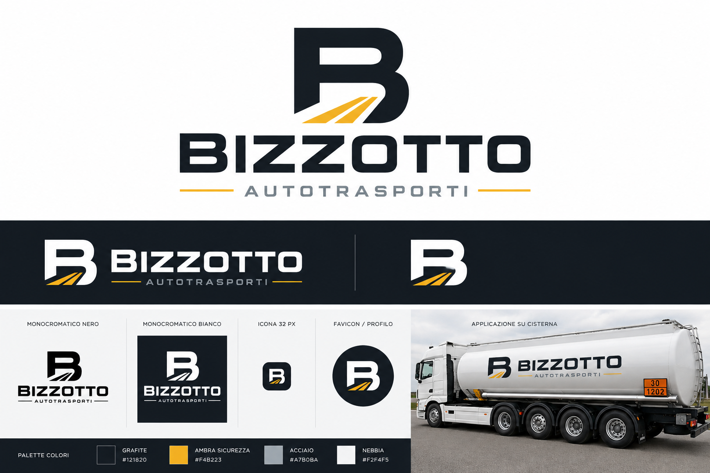

Solo il segnoVersione principale
Quella da usare quasi sempre: sito, documenti, firma email.

Su fondo scuro
Impilata
Per formati quadrati, adesivi, cartellonistica, divise.

Le versioni ridotte
Dove il nome non ci sta o non serve.
Icona del sito

Profilo social
Segno in negativoLa prova che conta: in piccolo
Queste sono le dimensioni reali, non ingrandite. È il modo in cui il logo si vede davvero nella barra di un sito o nella scheda del browser.

A 24 pixel «AUTOTRASPORTI» diventa marginale: sotto i 28 pixel conviene usare il solo simbolo. Nella proposta generata da ChatGPT quella riga spariva già a 32.
In bianco e nero
Serve per fatture, documenti di trasporto, timbri, fax dei depositi. Un marchio che esiste solo a colori è un marchio a metà.
Solo nero

Solo biancoDa dove veniamo
Il marchio attuale, la proposta di ChatGPT e il file finale.
Oggi — su fondo scuro

Oggi — su fondo bianco

Il problema del marchio attuale è tutto nella seconda immagine: il nome è bianco-crema, e su fondo chiaro sparisce. Aggiungi che la barra verde spezza la parola in due e che in bianco e nero l'effetto si perde.
La proposta uscita da ChatGPT

Il file finale
Che cosa ho cambiato
- Tutto è in tracciati. Quella di ChatGPT era un'immagine a pixel: ingrandita sgranava, i bordi erano sfrangiati, non esisteva una versione trasparente. Questa si ingrandisce all'infinito.
- I colori sono quelli esatti. Nell'immagine generata erano approssimati — il grafite usciva
#141A22invece di#121820, l'ambra#F2B022invece di#F4B223. Piccoli scarti che però si vedono quando il logo sta accanto a un fondo del sito. - Il sottotitolo si legge. Era in grigio chiaro: l'ho portato a
#59636Ee a un peso più solido, così regge anche stampato in piccolo. - Il carattere è vero. Le lettere generate non appartenevano a nessun font: erano disegnate a occhio, con spessori e spaziature irregolari. Ora è Saira ExtraBold in larghezza 125, la corrispondenza più vicina, con licenza libera anche per uso commerciale.
- La B ha ritrovato il piede. Nel disegno originale la lettera era interrotta dalla strada e a lettura veloce poteva sembrare una R. Il taglio ora segue esattamente la prospettiva della carreggiata: la strada passa sotto la lettera, non attraverso.
Colori
| Colore | Codice | Dove |
|---|---|---|
| Grafite | #121820 | Lettere, fondi scuri |
| Ambra | #F4B223 | La strada, i trattini. Accento, mai testo |
| Grigio | #59636E | «Autotrasporti» su fondo chiaro |
| Acciaio | #A7B0BA | «Autotrasporti» su fondo scuro |
L'ambra su bianco raggiunge 1,87 contro 1: va benissimo come segno grafico, non va mai usata per scrivere. Per lo stesso motivo l'acciaio serve solo sul grafite.
I file
Gli SVG sono gli originali: si ingrandiscono senza limite e si aprono con qualsiasi programma. I PNG servono per Word, per le email e per chi chiede «mandami il logo».
{kind=link}
{kind=link}
{kind=link}
{kind=link}
{kind=link}
{kind=link}
{kind=link}
{kind=link}
{kind=link}